DTaaS Website Screenshots
This page provides a screenshot-driven preview of the website serving the DTaaS software platform. A quick screen recording is available as well.

The https://intocps.org is used in this tutorial as an illustration
for base URL of the installation. Do replace it with
the correct URL of the installation.
Visit the DTaaS Installation
URL:
https://intocps.org(specified inconfig/client.jsfile)
Navigation begins by visiting the website of the DTaaS instance for which the user is registered.
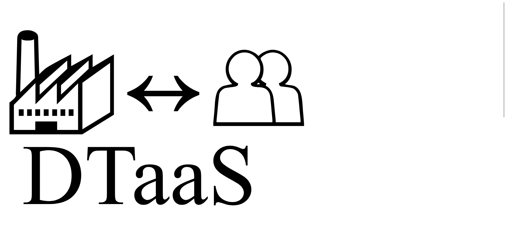
Redirected to Authorization Provider
URL:
https://gitlab.com/xxxx(specified inconfig/.envfile)
The browser redirects to the GitLab Authorization page for the DTaaS.
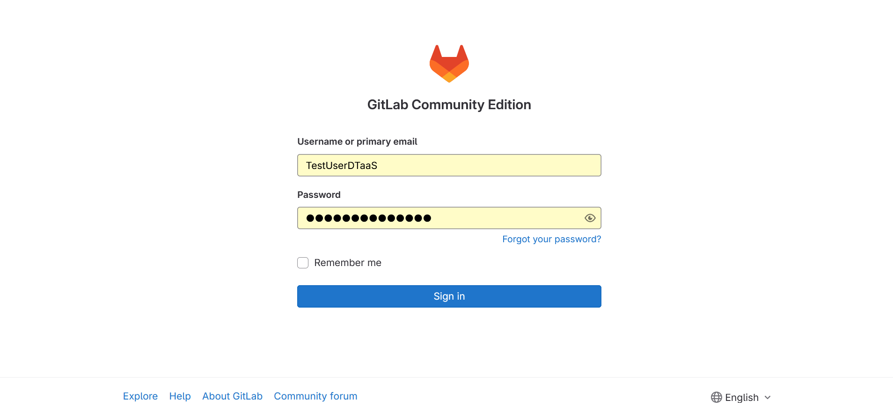
The email/username and password should be entered. If the email ID registered with the DTaaS matches a GitLab Login email ID.
The browser redirects to the OAuth 2.0 Application page.
Permit DTaaS Server to Use GitLab
URL:
https://gitlab.com/xxxx
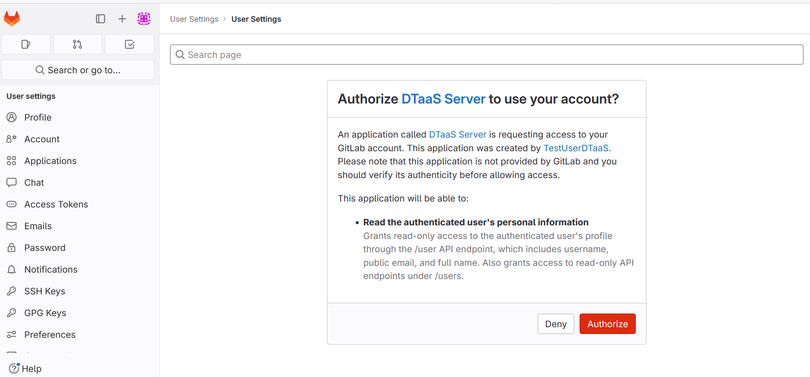
Clicking on Authorize permits the OAuth 2.0 application to access the information associated with the GitLab account. This is a required step.
After successful authentication, redirection to the login page of the DTaaS website occurs.
URL:
https://intocps.org
The DTaaS website employs an additional layer of security - the third-party authorization protocol known as OAuth 2.0. This protocol provides secure access to a DTaaS installation for users with active accounts at the selected OAuth 2.0 service provider. This implementation also uses GitLab as the OAuth 2.0 provider.
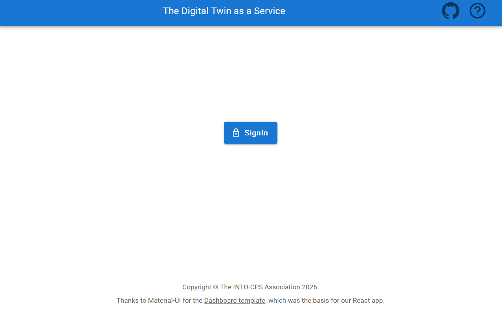
The GitLab signin button is displayed. Clicking this button redirects to the GitLab instance providing authorization for DTaaS. Re-authentication to GitLab is not required, unless explicit logout from the GitLab account has occurred.
Permit DTaaS Website to Use GitLab
URL:
https://gitlab.com/xxxx
The DTaaS website requires permission to use the GitLab account for authorization. The Authorize button must be clicked.
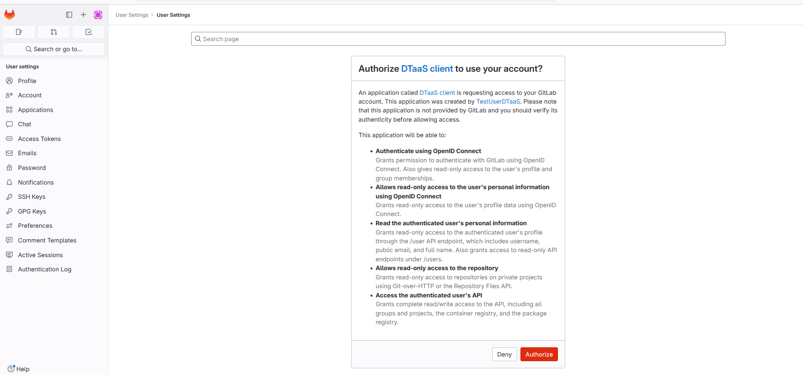
After successful authorization, redirection to the Library page of the DTaaS website occurs.
URL:
https://intocps.org/library/xxxx
Three icons are located on the top-right of the webpage. The hyperlink on
the  icon redirects to the help page, while the hyperlink on
the github icon redirects to the GitHub code repository.
The Account using the top-right purple 🅰️ icon provides options to
change settings and logout.
icon redirects to the help page, while the hyperlink on
the github icon redirects to the GitHub code repository.
The Account using the top-right purple 🅰️ icon provides options to
change settings and logout.
Check Website Access
For troubleshooting login issues, the website configuration can be verified by navigating to https://intocps.org/config/user. The following display indicates a correctly configured application.
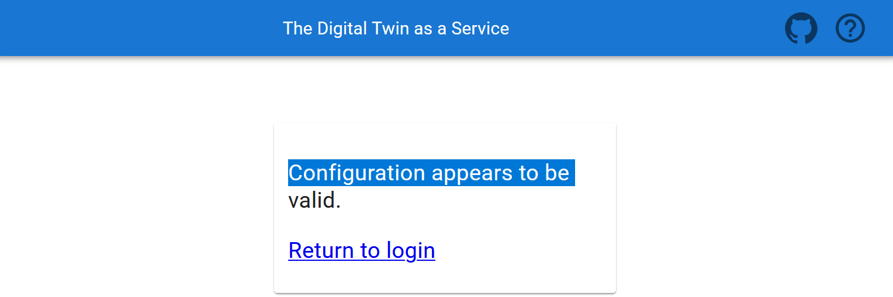
Menu Items
The menu is hidden by default. Only the icons of menu items are visible. Clicking on the three horizontal bars icon in the top-left corner of the page reveals the menu.
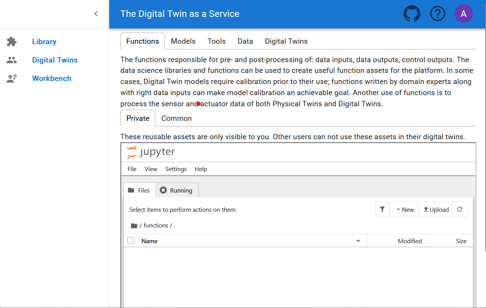
Three menu items are available:
Library: For management of reusable library assets. Files can be uploaded, downloaded, created, and modified on this page.
Digital Twins: For management of digital twins. A Jupyter Lab page is presented from which digital twins can be executed.
Workbench: Not all digital twins can be managed within Jupyter Lab. Additional tools are available on this page.
Library Page
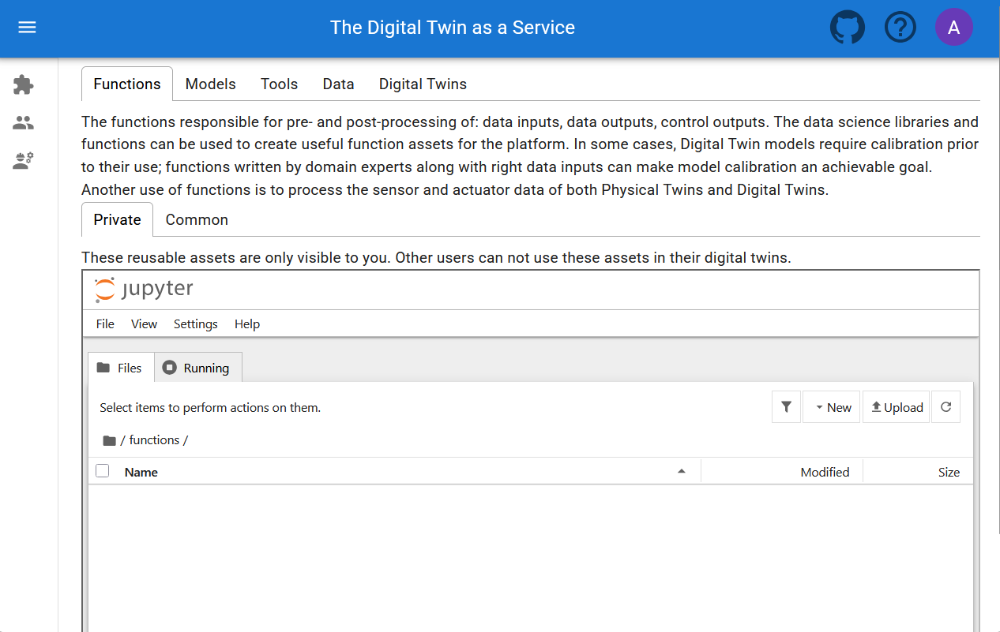
Five tabs are displayed, each corresponding to one type of digital twin asset. Each tab provides help text to guide users on the asset type.
Functions
The functions responsible for pre- and post-processing of: data inputs, data outputs, control outputs. The data science libraries and functions can be used to create useful function assets for the platform. In some cases, Digital Twin models require calibration prior to their use; functions written by domain experts along with right data inputs can make model calibration an achievable goal. Another use of functions is to process the sensor and actuator data of both Physical Twins and Digital Twins.
Data
The data sources and sinks available to a digital twins. Typical examples of data sources are sensor measurements from Physical Twins, and test data provided by manufacturers for calibration of models. Typical examples of data sinks are visualisation software, external users and data storage services. There exist special outputs such as events, and commands which are akin to control outputs from a Digital Twin. These control outputs usually go to Physical Twins, but they can also go to another Digital Twin.
Models
The model assets are used to describe different aspects of Physical Twins and their environment, at different levels of abstraction. Therefore, it is possible to have multiple models for the same Physical Twin. For example, a flexible robot used in a car production plant may have structural model(s) which will be useful in tracking the wear and tear of parts. The same robot can have a behavioural model(s) describing the safety guarantees provided by the robot manufacturer. The same robot can also have a functional model(s) describing the part manufacturing capabilities of the robot.
Tools
The software tool assets are software used to create, evaluate and analyse models. These tools are executed on top of a computing platforms, i.e., an operating system, or virtual machines like Java virtual machine, or inside docker containers. The tools tend to be platform specific, making them less reusable than models. A tool can be packaged to run on a local or distributed virtual machine environments thus allowing selection of most suitable execution environment for a Digital Twin. Most models require tools to evaluate them in the context of data inputs. There exist cases where executable packages are run as binaries in a computing environment. Each of these packages are a pre-packaged combination of models and tools put together to create a ready to use Digital Twins.
Digital Twins
These are ready to use digital twins created by one or more users. These digital twins can be reconfigured later for specific use cases.
Two sub-tabs exist: private and common. Library assets in the private category are visible only to the logged-in user, while library assets in the common category are available to all users.
Further explanation on the placement of reusable assets within each type and the underlying directory structure on the server is available on the assets page.
Note
Assets (files) can be uploaded using the upload button.
The file manager is based on Jupyter Notebook, and all tasks available in Jupyter Notebook can be performed here.
Digital Twins Page
URL:
https://intocps.org/digitaltwins
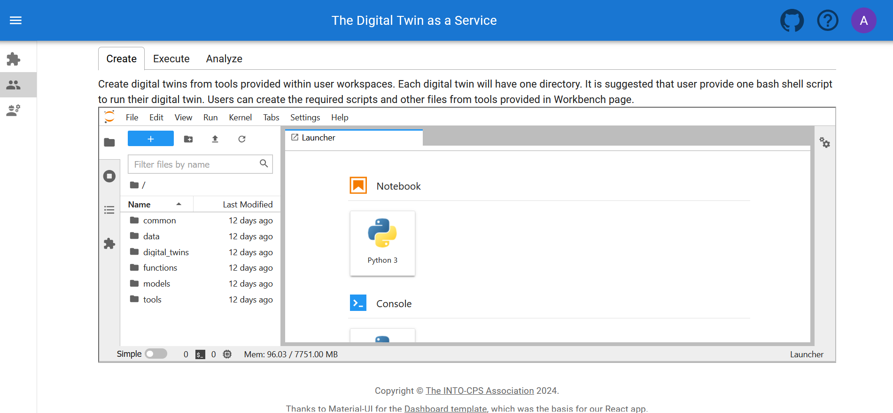
The digital twins page contains three tabs, and the central pane opens Jupyter Lab. The three tabs provide helpful instructions on suggested tasks for the Create - Execute - Analyze lifecycle phases of a digital twin. More explanation is available on the lifecycle phases of digital twin.
Create
Create digital twins from tools provided within user workspaces. Each digital twin will have one directory. It is suggested that user provide one bash shell script to run their digital twin. Users can create the required scripts and other files from tools provided in Workbench page.
Execute
Digital twins are executed from within user workspaces. The given bash script gets executed from digital twin directory. Terminal-based digital twins can be executed from VSCode and graphical digital twins can be executed from VNC GUI. The results of execution can be placed in the data directory.
Analyze
The analysis of digital twins requires running of digital twin script from user workspace. The execution results placed within data directory are processed by analysis scripts and results are placed back in the data directory. These scripts can either be executed from VSCode and graphical results or can be executed from VNC GUI.
The reusable assets (files) displayed in the file manager are also available in Jupyter Lab. Additionally, a git plugin is installed in Jupyter Lab that enables linking files with external git repositories.
Workbench
URL:
https://intocps.org/workbench
The workbench page provides links to six integrated tools:
- Desktop
- VS Code
- Jupyter Lab
- Jupyter Notebook
- Library page preview
- Digital Twins page preview
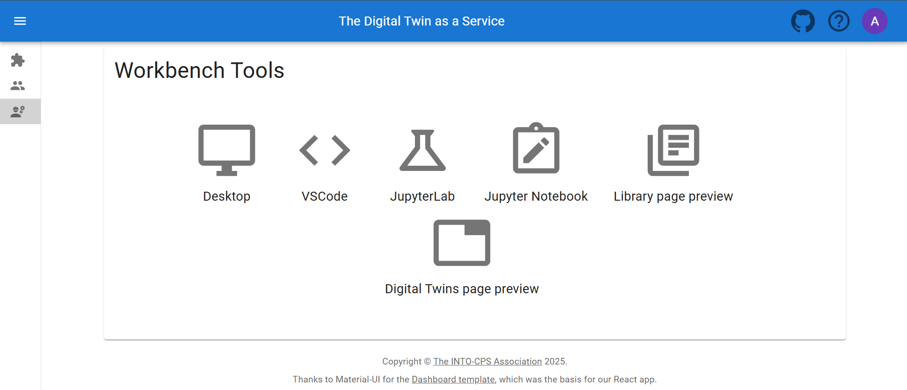
Screenshots of the pages opened by clicking on first four icons are shown:
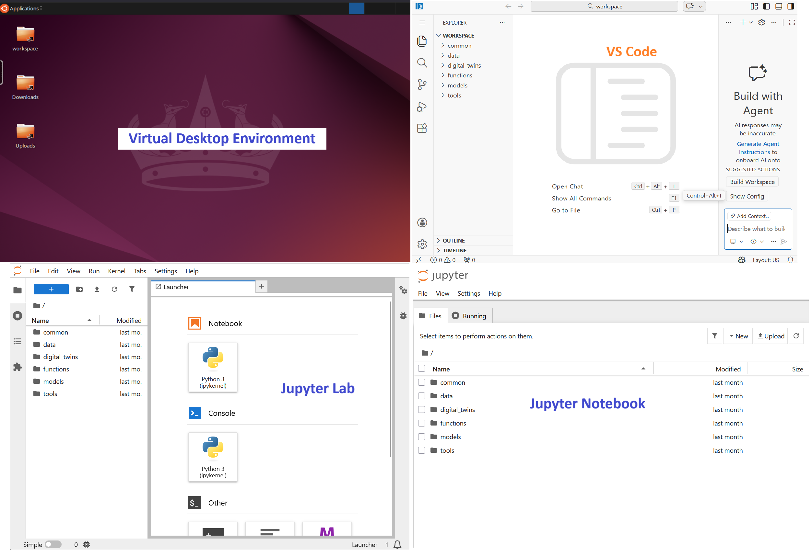
The hyperlinks open in new browser tabs.
The workbench also has two links to DevOps-based implementation of composable digital twins.
- Library Page Preview
- Digital Twins Page Preview
Library Preview Page
URL:
https://intocps.org/preview/library
This page has the same philosophy of Library page and provides similar user interface.
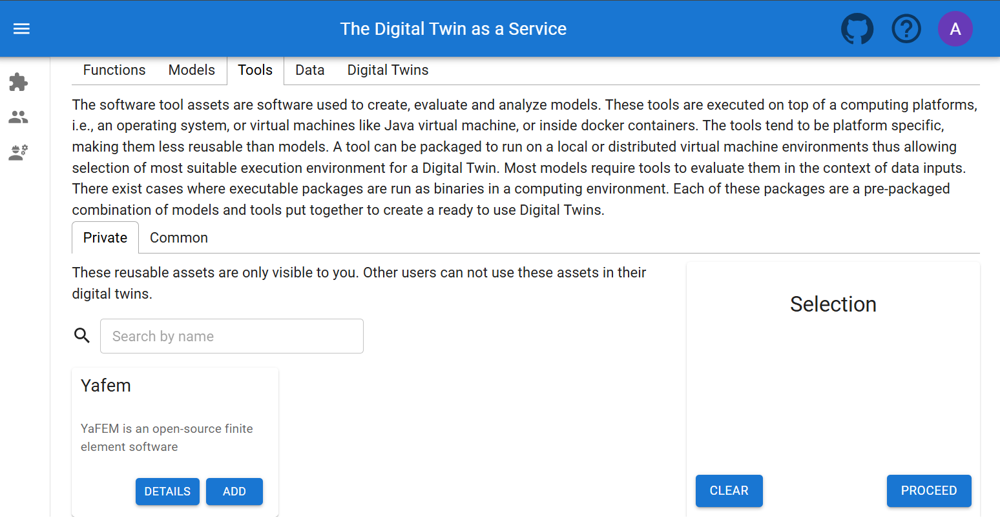
Unlike the Library page, this preview page uses digital twin assets stored in a GitLab repository. New digital twins can be composed by selecting the required library assets.

Upon clicking Proceed button, the digital twins create tab is opened.
Digital Twins Preview Page
URL:
https://intocps.org/preview/digitaltwins
The Digital Twins Preview Page provides means of managing digital twins using the DevOps methodology. This page has three tabs, namely Create, Manage and Execute.
Create Tab
The library assets selected will be used on the Create Tab
for creating new digital twins. The new digital twins are saved in
the linked GitLab repository. Remember to add valid .gitlab-ci.yml
configuration as it is used for execution of digital twin.

Manage Tab
Complete descriptions of digital twins can be read.

If necessary, a digital twin can be deleted, removing it from the workspace along with all associated data. Digital twins can also be reconfigured.

Execute Tab
Digital Twins can be executed using GitLab CI/CD workflows. Multiple digital twins can be executed simultaneously.

Finally logout
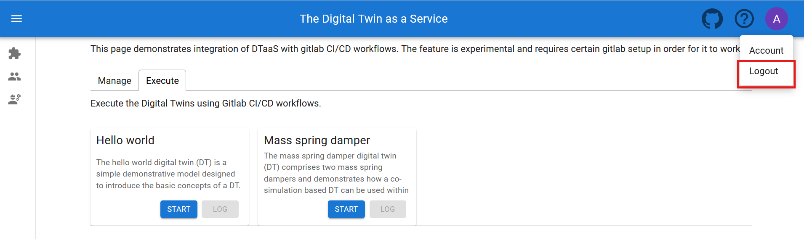
The browser must be closed to completely exit the DTaaS software platform.